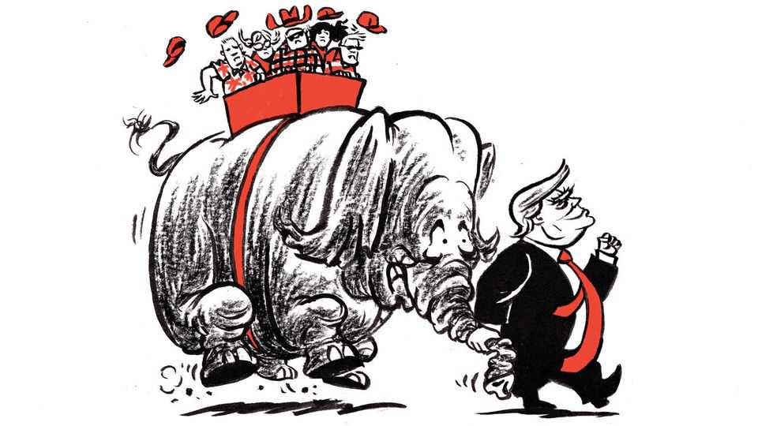

欧盟表示将再向格陵兰岛提供 2 亿欧元（约合 2.35 亿美元）资金，用于支持多个项目的投资。欧盟委员会主席乌尔苏拉·冯德莱恩（Ursula von der Leyen）到访这一丹麦领土时指出：“格陵兰岛可以依靠欧盟。”与此同时，特朗普在社交媒体发布了一张图像，将美国国旗叠加在格陵兰、冰岛等国家的地图上。冰岛政府随后召见美国大使要求作出说明。
最后，或许时机已到，该审视最高层了。默茨在某些方面是做得不错的，尤其是对乌克兰的支持和恢复德国武装力量。他的改革冲动值得赞赏。但他在政治上笨拙，管理不善，沟通更糟。他的支持率仅为 13%，且毫无迹象表明他明白原因。9 月 20 日的两次州选举可能为 CDU 带来更多灾难。德国的制度使领导人的替换困难，但 CDU 有替代人选。若默茨证明无法为自己的中间派政治阐述一个引人入胜的愿景，他就应该让位。■
— — —
§006沃什应当加息
原题：Kevin Warsh should raise interest rates · 板块：Leaders · 页码：P9–P15
这一论点错得不能再错。正如汽车的发明没有消除体育锻炼的需要，人工智能也不会使训练人类大脑变得毫无意义。恰恰相反，适应一个由 AI 驱动的、快速变化的世界，要求更多而非更少的思维敏捷。也正因 AI 将加大人们把困难认知任务外包的诱惑，学校更有责任帮助学生锻炼大脑、养成艰苦的思考习惯。未能为他们提供发达心智的基本构件——如识字和数字能力——是不可饶恕的。
一些科学家，包括弗朗西斯·克里克（Francis Crick）生前在内，也不相信人类真有自由意志，但那种观点与每个人对现实的感知、以及支撑自由、问责、责任和主动性等根本概念的信念都相悖。除非我们准备好重新审视文明如何运作，最一致的一套信念就是：人类拥有自由意志，而机器没有。任何 AI 系统都无法做其创造者不允许之事，哪怕是无意的。人类无需在必要时按下删除键时感到愧疚。
照这个尺度看，斯坦利·德鲁肯米勒（Stanley Druckenmiller）最近用 AI 撰写、发表在《华尔街日报》上的评论文章，简直算不上什么大事。面对哗然，该报评论编辑保罗·吉高（Paul Gigot）写道："许多撰稿人——尤其是知名政客或企业高管——都雇用撰稿代笔。与用 AI 让一篇文章更精炼有多大分别？"在理想世界里，确实没有分别。
我做了 15 年职业代笔——时间够长，长到我如今已记不清为《华尔街日报》代写了多少篇评论（我也为"特约文章"写过）。这行当远不止"写字"，但它的核心目标很简单：替别人把话写到他/她自己能写出来的水准之上。这正是 AI 为德鲁肯米勒先生所做的——据他自己承认，他是个糟糕的写作者。大多数人亦然。
围绕"用 AI 写作"的道德恐慌，仿佛存在于另一个现实平面。在那些"绝不要让 AI 代笔"的规劝背后，藏着一个幼稚的暗示：每个人内心里都住着隐藏的海明威，他们所需要的只是时间和与空白页独处的自律。做不到就是失败者的行为。
这是对写作世界一种疯狂的精英愿景，如今正催生出一门"遣词警察"的家用产业——像 Claude 的水印检测，或 Pangram 的 AI 写作评分。它们都不会教你如何让草稿更强。本质上，它们只是软件形式的训诫：你写错了，你在作弊，要更好！
这正是代笔人所做的事。我们递上一面镜子，让人们以新的方式看见自己的人生、自己的观念。而这，也是"用 AI 写作"的伟大许诺——它能让原本只有请得起代笔手的人才能享有的编辑火力，得到某种民主化。
我们离那个境界还差得远。每月 20 美元的 Claude Pro 订阅，仍是大多数人替代真人代笔手的最佳选择，但它在"对话质证"上依然一塌糊涂。你叫它跟你辩论，它能辩一阵。但这些系统的设计初衷是可人：它们被"后训练"去产出人类更喜欢的答案。它们是一嘴好词的应声虫。
也许 AI 最好的类比，不是电、不是火、也不是互联网，而是 12,000 年前农业的发明。当我们的食物供给依赖收成，生与死便与一丘土地绑定。"我们并没有驯化小麦，"历史学家尤瓦尔·赫拉利（Yuval Noah Harari）写道，"是小麦驯化了我们。"（这句话再精妙，读起来却极像 AI 所写——这是至高无上的反讽。但谁也不必在意。）
与 AI 的风险是一样的：那个扩展我们产能去"生产"文字的东西，同时约束了我们在其背后注入思考的能力。一个更有、却更空的世界。
格罗特先生说："AfD 与激进的伊斯兰主义者是盟友——他们都在两极分化上受益。"法国明年总统大选的头号候选人 Marine Le Pen，不满足于法国现行关于政府建筑中禁止头巾等"夸张宗教符号"的禁令，呼吁在所有公共场所实施禁令。这势必将把许多仅仅虔诚的法国穆斯林推向极端分子怀抱。荷兰城市阿尔梅勒（Arnhem）市长、前工党国会议员 Ahmed Marcouch 担忧即将发生之事。关于如何在穆斯林社群中应对极端观点的公共讨论本是一个好主意，他说："但那个对话从未真正有机会发生。" ■
1999 年，一位默默无闻的二届国会议员向一本关于日本未来的文集投了一篇文章，其中满是雄心。高市早苗（Takaichi Sanae）设想，到 2010 年 10 月，她将成为首相，并创办一个固定周日上午的电视节目，直面公众。高市只在时效和媒介上错了：她于 2025 年 10 月出任首相；她没有上电视，而是在 X 上发帖。文集收录松下政经塾（Matsushita Institute of Government and Management）的毕业生，高市在这里从松下公司声名远扬的创始人那里学到，应把政治看作"国家经营"的艺术。
高市已把这一课用于执政。"她像日本的 CEO 那样思考，"曾任日本银行（央行，Bij）副行长、现为高市亲密经济顾问的田村真树（Wakatabe Masazumi）说。而这位 CEO 相信，是大投资的时候了。随着高市的首个完整预算逐渐成形，其转型计划的规模逐渐明晰。她的增长战略展望从明年到 2041 年初，跨越 17 个行业，公私营投资达 ¥370 万亿（2.3 万亿美元，或 GDP 的 55%）。为促成这一目标，她已改变预算流程，允许所有部提交多年期预算请求。9 月 4 日公布的明年预算初始请求合计创纪录的 ¥143 万亿，前值为 ¥122.5 万亿。市场不安：财政担忧一度推动 10 年期日债收益率突破 3%——三十年来的头一回（见图表）。
七世纪，一位名叫玄奘的中国僧人踏上西行之路。目的地是印度，彼时中国视其为佛教发源地而倍加尊崇。十六年后玄奘归国，带回了数十部经书——其翻译将深刻影响佛教在汉地的发展。但他还带回其他有用的知识，包括关于印度政治、经济和地理的。他将其记于《大唐西域记》（Records of the Western Regions）之中。这位佛教僧人或许无意中，也成了早期的印度学者。
许多中国人抱怨：努力不再被回报。德国社会人类学研究所（马克斯·普朗克研究所）的项飙（Xiang Biao）说，只有少数年轻人彻底从跑轮上跳下来，但大多数已失去对中国传统工作文化的信心。许多人渴望放慢脚步，尽管弱经济和对就业的 AI 威胁迫使他们加速。项飙认为，休闲"抚平"这种加剧的紧张，因不快乐的工人投身健身房、微短剧和游戏。
在阿那亚有一处分店的连锁书店 One-Way Space 的 Chang Chen 注意到，图书展示已从管理学问转向自我反思和时间安排。"过去人们只想知道怎样成功，"他说。如今"更多是……如何培养自我意识、如何放松、如何休息"。为服务这一需求，该店主办书店留宿和微醺阅读之夜。
对许多拥抱休闲的人来说，政治感觉遥远。阿那亚艺术中心一场展览上，上海工程师 Jason Ji 说："共产党大多事处理得好，所以我们只管让它去办。"这给他更多时间追求个人兴趣，如 Hyrox——一项已在华流行的德国健身竞赛——或家庭"宅游"（staycation），在建筑师设计的酒店中度过。
普洱如今已成为爱好人士的热门目的地。27 岁的本地人 Wang Yan（Wang Yan）饱受太阳能行业职业倦怠之苦，说游客来到这座不疾不徐的城市，为返回工作前"重置"。她在镇上开了许多手工艺作坊之一。被严苛教育制度剥夺玩耍的成年人终于解脱。"都是在补偿你的小时候那个自已，"在顾客把花纹锤印于包上、扎染衣物时，她这样说着。同时，一位采野向导正在为城市居民辨认像喇叭和小扫帚的蘑菇。26 岁的 Wang Keyi 扫描着森林地面说："我感到自己还活着。"
阿那亚一家咖啡馆里，Zhang Lin 将自己的休闲生活归于勤勉与机遇。42 岁的她与丈夫在二十年前行业起步时创建了一家游戏公司。买房、买车和北京居住证目标下，工作吞噬一切。她们得益于中国繁荣时代，如今更少思考工作。开车穿越西北山区六周后，她们在阿那亚结束夏天。她不买手袋或珠宝，大部分花在教育和"出去玩"上，她说。
但这恰恰是放松的北京人代表着未来。中国对休闲的重新评估，反映着党民之间隐性协议性质的转变。顾问公司 Gavekal Dragonomics 的 Arthur Kroeber 说，"社会契约不再可能是'你可以赚你想赚的'。已转变为'你将过一段 OK 的生活，我们会保障你的安全'、放任个人活动——当然，只要这些活动不是政治性的。" ■
— — —
§019中国独生子女偏好同类婚配
原题：Only children in China prefer to marry other only children · 板块：China · 页码：P24
无论郭的困境还是洪水报道的围剿，对追踪中国言论环境的变化者来说都不惊讶。两者都是信息环境已转移多远的冷酷标记。2000 年代初，互联网看似打开了一片辩论空间。中国记者有时追索勇敢的调查。但习近平自 2012 年掌权后不久便表明——混乱的互联网须被驯服、媒体必须为党服务。按他自己的尺度，他已成功。中国仍有大量纯国家媒体之外的评论——尤其在微信"公众号"上。但任何在那里发帖者都知道，触及禁忌主题会导致账号被关闭——强动因让人选择安全。近来，人工智能给予审查者极大权力扫视数字世界的全貌、并迅速删除不合宜内容。曾一度落后于中国曾经活跃的网络交谈的党，如今无疑已占上风——网站 China Digital Times 的肖强（Xiao Qiang）这样说，该网站监测审查。
自然要想到国家阻止什么——无论是外国网站还是国内批评者。但这一系统远比此雄心勃勃。更大的目标是管理"更广阔的信息景观，以改变公民的所知，甚至所想"——Jessica Batke 与 Laura Edelson 去年为智库亚洲协会（Asia Society）所做的一篇分析写道。中国居民仍可"钻出"国家"防火长城"来看世界其他地方在谈什么。但只有少数人这样有动力，即便有人形成不同观点，也无法将其带回中国的在线讨论。肖强说，他的团队每天仅能存档 1–2 条帖子——在它们被清除前。它们已"越来越不值一提"，往往在批评范围上很微小——他认为，这是中国那台运转良好的信息管控机器的见证。
左派主要在稳固的民主党的领地——如底特律、纽约和费城——取得成功。"你在纽约赢了？很好，"温和派、前民主国委员会主席 Jaime Harrison 这样说，他更愿意淡化"进步派颠覆"之说。"是摇摆座位才会在众议院和参议院给民主党多数"。
民主党人往往优先考虑可当选性——左派越过初选、进入竞争性大选的例子寥寥。密苏里州的参议员大选中的 Abdul El-Sayed 就是其中之一——也是最高赌注的竞选。他自称资本家，却来自行动派左派。他与 Hasan Piker（一位擅长"愤怒诱饵"的主播）早期关联，已成回噬。另一例是密苏里州第 7 选区的 William Lawrence——特朗普 2024 年险胜的选区。
Lawrence 的迄今成功，展示了基层的反建制情绪。在初选中，他击败两位中间派，包括受民主党参议员 Elissa Slotkin 推荐的前海军海豹部队成员。Lawrence 是气候行动家和租户组织者，多年前在一次管道抗议中用锁链将自己绑在建筑设备上，犯下一项重罪（后被撤销）。他因 Slotkin 女士支持以色列而称她"好战分子"。反对数据中心是其竞选核心。问及如何赢得初选，他答："人们很气。"
我们的模型给 El-Sayed 63% 的胜率，Lawrence 60%——部分原因是特朗普糟糕透顶的支持率，压倒意识形态极端化在选举中通常的负担。但即便 El-Sayed 击败共和党对手 Mike Rogers，左派也将视之为证明——非特朗普不受欢迎，而是左翼民粹派在摇摆选区可行。
有趣的是，民调显示民主党选民既比共和党人更有投票热情，又对自己党派更不满意。"任何掌权者，仅因掌权这一事实，就是一个可疑且失去信用的人物，"民主党策略家 Phil Gardner 说。当选民停止信任党派领导人时，他们也就停止听从其背书。Schumer 在缅因、密苏里、明尼苏达参议院初选中推荐的候选人全败。
中间派候选者正亮出大胆计划。前交通部长 Pete Buttigieg（拜登时代）要废除选举人团、扩张最高法院。乔治亚参议员 Jon Ossoff 有力地说根除政府腐败。加州州长加文·纽森（Gavin Newsom）希望山姆大叔在 AI 公司中持有股权。Emanuel 希望为政客设年龄上限、为儿童设社交媒体禁。
原题：How American universities get around the DEI backlash · 板块：United States · 页码：P32–P37
编辑注记（9 月 8 日）：本文已更新以澄清我们的分析，并纳入俄亥俄州立大学的一位评论。
长久以来，大学生以新时俚语自娱。如今他们的行政人员也加入进来。随着对面向少数族裔学生的"觉醒"项目的越来越强烈的反弹，校园领袖们在为他们的"多元化、平等和包容"（DEI，diversity, equity and inclusion）办公室找新名称——弃用如"多元化""平等"这样的词，转而采用"健康""社群"。5 月，乔治·华盛顿大学（George Washington University）将"多元化、平等与社区参与办公室"换为"社区、文化与包容办公室"。年初，伊利诺大学 Urbana-Champaign 分校把"DEI 办公室"改名为"准入、公民权利与社区办公室"。
这一语言改造背后，是一场共和党引领的对公立大学 DEI 项目的围剿。据"高等教育纪事报"（Chronicle of Higher Education），自 2023 年起，州立法者已引入逾 150 项法案针对大学校园多元化项目。特朗普——他曾将 DEI 骂为"反美"——通过发布命令拆除联邦政府中的 DEI 项目、并威胁削减对其的经费，增加了压力。这场运动已取得立法成果：19 个州的 34 项法案已成为法律。但《经济学人》对大学工作人员数据的分析显示，尽管政治喧嚣不停，这场围剿迄今影响有限。
DEI 办公室通常帮助大学遵守反歧视法，同时监督面向少数族裔学生与员工的招聘和支持计划。它们也可能主持关于无意识偏见、包容式教学等主题的研讨。支持者说这类办公室确保对高等教育的广泛参与、并促进包容。保守派则说它们推行种族偏好和进步政治。
大学通常有三种应对法律与政治压力的方式。极少数——如哈佛——拒绝拆除 DEI 项目。其他一些简单遵从。大多数大学则选择第三条路：给 DEI 办公室换名重组。
弃去办公室和职位名称中的政治化用语，可使大学在保留员工与追求同一目标的同时减少审查。俄亥俄州参议院 1 号法案（在公立大学禁止 DEI 项目）的发起人 Jerry Cirino 说，总体上他对遵从很欣慰，但"做法还在继续，他们只是换个叫法"。即便一些 DEI 倡导者也承认此点。高等教育多元化官员全国协会（National Association of Diversity Officers in Higher Education）主席 Emelyn dela Peña 说："有些人改变了公开使用的语言，但底层工作非常相似。"
《经济学人》从若干大型州立大学系统取得工资记录，以衡量这场围剿对员工与薪资的影响。这些记录不能建立 DEI 工作本身是否减少，只可看到员工开支是否下降。数据显示，DEI 员工的开支在下降——不仅在许多共和党州，也在一些民主党州。但下降幅度温和——即便在迅速取消 DEI 办公室的大学中。
北卡罗来纳大学系统（University of North Carolina system）提供另一例。北卡 2026 年才正式限制 DEI 办公室，但系统董事会已预见围剿，于 2024 年 5 月修改其政策以重申"反歧视"、摒弃"行政行动主义"。全大学系统约 69 名 DEI 员工的职位名称或部门名称作了调整。但员工人数几乎未变，薪资仅下降 5%。许多情况下，模糊的职位变得更模糊。一位高薪副系主任，从"包容性卓越"调为"健康与福利"；一位副校长，把"平等与包容"换为"学生健康、福利与蓬勃"。
立法者正在加强执法力度。得州设立"监察专员"——可调查违规、建议扣留经费。2 月，俄亥俄立法者提议大学须证明被重新分配的 DEI 员工实际从事了实质不同的工作——否则可能失去州经费。2024 年引入的田纳西州法案，将禁止大学任何部门执行 DEI 办公室职能——"无论名称或标识"。
尽管如此，保守派所称的"DEI 官僚体系"将难以拆除。大学花了逾十年建设多元化办公室、聘用员工——很难转向。但化妆性变化不太可能使它们免受保守派侧射。对许多右翼者而言，攻击 DEI 已成文化战争中一件有用的武器——没有太多放弃的理由。 ■
— — —
§025怀俄米末路水库干涸
原题：A reservoir of last resort is running dry in Wyoming · 板块：United States · 页码：P28–P33
科尔特湾干涸并不罕见，但也非极例。自 1909 年有记录以来，Jackson Lake 的水位约有 16% 的天数落在当前水平以下。但对湖水的巨大需求、以及今冬是否带来急需之雪的未知，使得州和怀俄米州的用水者忧心。干涸的湖床尚非灾难——却是警告。Jackson Lake 的困境，说明了在美洲西部平衡对水互相竞争的需求，已越来越难。
诱人的解释是，去年落山山脉雪量稀少，完全造成 Jackson Lake 低水位。但怀俄米大学（University of Wyoming）的 Bryan Shuman 说，注入该湖的蛇河源头"几乎是大西部唯一接近正常雪量的地方"。事实上，该湖困境的原因，与天气一样，来自人与政策。
在美国西部各州，先定居者通常持优先水权——"先入先占"（prior appropriation）教义。在蛇河这一段，最优先的水权持有者包括向得州农民灌水的灌溉区和运河公司。1900 年代初，联邦政府在 Jackson Lake 筑坝后，灌溉使农民能在得州蛇河平原种苜蓿、马铃薯、甜菜等。一个产业兴起：1925 年得州农业价值达 450 亿美元。"从水权角度……他们手握全部牌，"Jackson Hole 的河流装备商 Aaron Pruzan 说。
今年得州雪包与干涸，使农民不得不对蛇河水库更用力抽水。有些常规地被抽干。但农民通常希望保留 Jackson Lake 水位——它处于山丘最高处。"水从顶上抽走便不可回，"得州马铃薯农 Jeff Van Orden 说。Jackson Lake——他们的末路水库——正在干涸，表明困境已多么严重。
想玩皮艇或桨板的访客仍可往更高的船坡。游客仍纷纷涌向这个公园。但令人悲伤的水库揭示了紧张：得州农民需把 Jackson Lake 抽干灌溉农田，怀俄米游业却需满盈的河与湖。当地居民最大的误解是，水资源管理者可随意改变 Jackson Lake 的流出，怀俄米野生动物与鱼类署的 Darren Rhea 说。"但你在某处怎样操作，影响的是下方所有东西。"
该湖的复苏取决于冬季天气。蛇河水库通常由新雪融补，但厄尔尼诺天气模式常使北部落山山脉缺雪。长远趋势因气候变迁更暗。平均而言，大黄石地区每冬雪量比 1950 年代少约 25%。对水竞争的互相需求可能变得不可持续——使联邦政府的水资源管理者、垦务局（Bureau of Reclamation）处境困难。非营利组织"美国河流"（American Rivers）的 Scott Bosse 说："'先入先占'的水权范式确实在显露其老态。"
特朗普多年来清洗叛徒，加上如今的不受欢迎，把共和党围困了。全国各州的初选中，民主党投票者出席率超过共和党——民调确认的党派热度差距。2024 年对特朗普抱有好感的独立选民，已转向反对他。提醒特朗普硬核心支持者为何热爱他、为何恐惧或仇视民主党——可能是该党保住国会多数、救回特朗普推荐之 MAGA 忠臣的候选——替代更可胜选之共和国人。

没有什么比特朗普自选了得州——他 2024 年以近 14 个百分点胜出的州，而非传统竞胜战场——举中期大会，更生动说明"自我政治学"的递减回报。他决定帮助州检察长 Ken Paxton 从参议院 John Cornyn 手中夺去共和候选权——把一个原本安全的座位变为悬案。共和党参议员们认为，只有全速拥护和特朗普数百万美元才能救 Paxton 的候选——而这就是特朗普喜欢的方式。
特朗普的业绩从未听上去比现在更显赫，美国也比现在更成功。对手的危险也从未被如此存在化。一个接一个的发言者警告：若民主党得权，他们将废除监狱、让男人进入女子运动场和洗手间、对劳工阶级加税以为他们欢迎的违法越境者提供医保。若共和党人在白宫，这如何成为可能——并不清楚。但社民主义候选人和主战主播 Hasan Piker——与民主党竞选者同行——的极端性，为共和党提供了新鲜、抓眼球的材料，将这场选举框为"常识与共产主义、爱美国之爱国者与恨美国之极端者之间的选择"——众议院多数党党鞭 Tom Emmer 如是说。
米莱的救星可能是他的对手。最有可能的挑战者是 Axel Kicillof——布宜诺斯艾利斯省的庇隆主义州长。曾任财政部长、与过去的开支过盛深度关联——他的净支持率与米莱一样糟。Kicillof 坚持目前他不是候选人，却仍着力突出米莱的经困。然而他自己的非常规经济学令市场恐惧、使许多选民害怕。他不接受通胀主因是印钱的说法，反说它"很复杂"。
庇隆主义者也分裂。上次输给米莱的 Sergio Massa 可能再试。激进国会代表 Juan Grabois 也许参赛。他承诺以大幅加税对富人融资的社会正义。"你不必怕 Axel [Kicillof]，"他嘿嘿笑，"你该怕我，该怕 Myriam Bregman。"她是一位知名托洛茨基主义者——比庇隆主义者也更左。惊异的是，她的支持率远好于 Kicillof 和米莱。
然而有迹象表明，政府的国内议程可能被吹离航线。7 月，联合政府就一套 34 点税、养老金和其他经济议题改革方案达成共识。这是此前以争执和否决为标志的联合政府，在重大国内政策上的首次成就。但萨克森-安哈尔特选举后，SPD 联合主席、副总理 Lars Klingbeil 称之为一个"信号"——政府须重审其方法。这鼓舞了默茨阵营中的保守派，抱怨一项他们一直视为薄弱、但为联合和谐先前愿意吞下的税改。在联邦议院发言中，默茨暗示他愿意重审养老金改革的关键要素。更多稀释将进一步激怒那些已觉得默茨让步给 SPD 伙伴太多的基民盟成员。但选择党的力量如此强大，两个联合伙伴都无处可去。
休达居民的生活变得极其不愉快。数百名移民睡在城市医院门前的街上，那里气味令人作呕。对犯罪的恐惧增加了。士兵守卫着每座超市外围。父母害怕让孩子外出，甚至去上学。一些移民感染了传染性疾病。"我们每天接诊成百上千的移民，"医院护士工会主席 Elisabeth Muñoz 说。与此同时，她表示，休达居民因害怕感染而在取消预约。
尽管一份警报告述摩洛哥安全部队如何怂恿移民，桑切斯却奇怪地不愿批评其邻国。摩洛哥一向声称对休达拥有主权，许多西班牙人把这次涌入视作战略的"混合战争"战术。9 月 2 日，数万人全西班牙示威声援休达，这让当地民众振奋。但若要维持休达的生存，西班牙必须做得更多。"许多年轻人正在重新考虑是留在这里还是在别处谋生。那是摩洛哥的策略，"当地那所国立远程大学分校的负责人 Carlos Rontomé 说。
桑切斯八年来作为首相展现的敏锐政治反射，在这场危机中离他而去。本周发布的一项调查中，只有 14% 认为他处理得好。明年将举行大选，民调给予右翼反对派稳固多数。休达很可能数月内继续恶化。"这与移民相关——正是右翼能最大动员的问题，"政治学者 Luis Miller 指出。对西班牙和桑切斯而言，休达的街头关系重大。 ■
— — —
§035俄罗斯把学校变洗脑机器
原题：Russia has turned its schools into indoctrination machines · 板块：Europe · 页码：P54–P59
现实总有一副戳破计划的本领。无论是与美国的 IT 产业竞争，还是管束法国预算，迄今都未有所获。然而，欧洲能作为一体在外交事务上行动这一念想，正获得新的助推。德国与法国——欧盟两个最大成员——拟定的计划，想象着对这个俱乐部外交机器的重新布线。在地缘政治多事的时代，为欧盟的对外政策找到一种协调方式，看似迫切。然而，目前任何机能失调之责，与其说在外交官身上，不如说在其政治领袖身上。把欧盟外交官归咎于这个集团缺乏外交影响力，就像指责甲板上水手——而把船开进礁石的水手长却在大声指挥。当多数时间根本没有一项共同对外方针可执行，又如何执行共同外交政策？
各方都承认，欧盟的外交机器有问题。2011 年，在上次重大条约更新之后，它成立了一个雏形外交部——其不雅之名是欧洲对外行动署（EEAS）。它本应对欧盟各成员国首都及欧盟机构双重负责。结果是一团糟。代替有外长，欧盟设的是"高级代表/副主席"——一个连亨利·基辛格都不认得的名衔。自 2024 年起，这一职位由 Kaja Kallas 担任——拉脱维亚前首相，以她亲俄鹰派观点出名。尽管她是迄今最高曝光度的高级代表/副主席，她亦未比其三位前任更成功。
欧盟当前结构的致命瑕疵，是它成立于另一个时代。在特朗普执政前、二十一世纪初较平静的日子里，EEAS 忙于一群没几个国家领导人太在意的问题，如西巴尔干的未来或对伊朗的制裁。但如今，地缘政治无处不在。无论是中国的过剩产能、俄罗斯混合攻击，还是美国在格陵兰和霍尔木兹海峡的冒险，海外事件都左右着国内政治动态。"一次委托给外交部的事项，现在被国家领导人常规处理，"智库欧洲卡内基会的 Stefan Lehne 指出。这使得能外包给服务欧盟机构的那善意外交官的更少。
伊斯兰主义者与极右一致认为，伊斯兰与西方文明不相容。双方都把伊斯兰主义描绘为英国伊斯兰的"正常版本"。其实不然。Sohail Ahmed 之所以走出激进主义，部分是因为他看到，穆斯林学者早在欧洲启蒙之前就已拥抱科学推理，提供一种与今日伊斯兰主义者几乎不像的伊斯兰。"我被教导去恨其他穆斯林，甚于恨非穆斯林，"他说。
在伦敦以穆斯林为主的白教堂（Whitechapel），Kismet 是一间温馨的咖啡馆，欢庆穆斯林文化。它由 Muddassar Ahmed 创办，举办爵士之夜、穆斯林喜剧表演和一批壮观的奥斯曼时期地图收藏。Ahmed 先生说，它不接待那些"想告诉其他穆斯林他们把伊斯兰做错了"的强硬团体。"我不容许他们在此，"他说。"我觉得他们是疯子。" ■
— — —
§038一穆斯林群体处境好于表象
原题：One British Muslim group is faring better than it seems to be · 板块：Britain · 页码：P72–P73
船长们为填补空缺招收移民。Young 先生说："我们本意想雇英国人，但一个都没有。"相反，其船员大多是菲律宾人，他形容他们"极其出色"，且至关重要的是"不酗酒，与英国人不同"。然而拿到技术工人签证正变难。Hatchman 指出，对甲板水手来说，达到政府现要求的那种熟练英语，是一道高门槛。对 Young 先生而言，这是个生死问题。"若没有外国工人，"他说，"我们就不会下海了。"
另一是对冲突的渴求——并非主动激事，却极快应战，且比十年前更快。法拉奇先生曾被嘘声者打断。一位代表用拐杖打了一下第一个，另一个抓住了她的头发。大厅沸腾如罗马斗兽场。该党财政发言人 Robert Jenrick 后来被问到那场混战。"哦，真可怜，"他回说。"去活吧。"他过去是个一本正经的保守党人。但在厌世党里往上爬，人们不得不说此类话。 ■
但分数下跌，也会加剧对科技如何影响儿童学习——尤其阅读技巧——的长期担忧。OECD 教育主任 Andreas Schleicher 主张，无处不在的智能手机和广泛可得的社媒，意味着年轻人越来越少地练习理解复杂文本。他指出，一类被称为"性急读者"的应试者数目正在上升——他们飞快地扫过识字测试，却答错许多答案。
然而，尽管他们温顺，开普穆斯林却是颠覆性的。南非种族隔离时期，每周五，“圣徒之圈”（The Circle of the Saints）作者沙菲克·莫顿（Shafiq Morton）称，“世界上每个国家的面孔”都在全国各地的清真寺聚集祈祷，以低声的违抗对抗政权。开普穆斯林活动家如艾布拉欣·拉苏尔（Ebrahim Rasool），在种族隔离时期入狱，后成为西开普省（南非省份之一）的首席部长，他创立了伊斯兰之声（Call of Islam），该团体与纳尔逊·曼德拉的非洲人国民大会（ANC）一起在城镇区举行大规模集会。图安·古鲁被囚禁十二年的罗本岛（Robben Island，位于开普敦外的监狱殖民地）上，开普马来人的坚韧精神是常态，曼德拉后来在那里度过了 18 年监禁生涯。
与此同时，酿酒商和酒客正扩张入罐装鸡尾酒——过去是蒸馏酒商的地盘。所谓"即饮型"（RTD）——从预调金汤力到椰林飘香鸡尾酒——人气飙升。据 IWSR，全球销量去年升 3%，高端款升逾 15%。它们的一大吸引力来自便利。AB InBev 的 CEO Michel Doukeris 解释："假设你招待十个人，但你自己又不想待在厨房为每个人张罗。开一罐玛格丽特，或一袋里面是葡萄酒冲饮的利乐包，更容易"。
两条信念都证明是对的。如今 Oura 的戒指装饰着全世界数百万人的指头，包括 Kim Kardashian 一位真人秀明星、Tom Holland 一位电影演员等 A 名单名人。9 月 3 日，该企业向美国上市申报，据报道寻求逾 160 亿美元的估值。截至 6 月的九个月内，它产生 12 亿美元销售额，较上年同期增 74%。不同于许多寻求上市的火爆初创公司，它也实现盈利。
Oura 的崛起起初缓慢。上月接受《经济学人》采访时，公司 CEO Tom Hale 回忆，一次次听到准顾客说出类似的话："这主意我很爱，但对我来说有点大。"生物黑客和硅谷宅男构成早期需求的大部分。然而随着时间推移，技术进步——特别是电池续航——让 Oura 把设备做得大为轻薄。研究机构 CCS Insight 的 Ben Wood 说："如今没人看它还会觉得那是件科技产品。它几乎跟我的婚戒看起来一样。"
但它们将持续失血——牛肉将保持高价——直到牧场主复原畜群。特朗普不情愿承认这一点：毕竟其中许多人投了他。相反，8 月 31 日其农业部长宣布“牧场主优先”计划，使农民更易绕开中间人自行加工肉类，并为小型屠宰场提供财政支持。德克萨斯 A&M 大学的 David Anderson 认为，这些对价格不会有多大影响：“数字将小得…根本不会改变更大市场。”指望牛肉减价的美国消费者，也许要等到牛郎回家。 ■
— — —
§050你忠于公司还是团队
原题：Are you committed to your company or your team? · 板块：Business
但如果你在一家足够大的公司工作，你不仅仅属于这个组织。你拥有“嵌套身份”：你也是某个部门的成员，是该部门内的某个团队成员，甚至可能是更小群体的成员。这些其他内部群体可能真的很重要。图宾根大学的迈克尔·里凯塔（Michael Riketta）和歌德大学的罗尔夫·范·迪克（Rolf van Dick）进行的一项研究综述发现，平均而言，员工对工作小组的认同感强于对组织本身的认同。
根据宣传视频，来自开放人工智能（OpenAI）的最新模型阿斯特拉（Astra），在技术上是一次飞跃，但在审美上却是一次倒退。该片段始于 1979 年的一段颗粒感强烈的画面，展示了一位麻省理工学院（Massachusetts Institute of Technology）研究人员正在测试语音指令软件。随后切换至当下。伊姆斯椅和投影幕依然保留。但现在，工作人员一边在棕色地毯上踱步，一边通过口述命令制作演示文稿、修改合同；另一人则在一旁放松，搭建并玩着火箭船游戏。一言以蔽之，这一切都充满了复古气息。
资本主义通常不会善待那些试图倒转时钟的人。现代工人拥有的任何落后技术倾向（比如使用旧手机）一旦接触现实世界就会被粉碎。历史上充斥着试图通过回归旧设计来重振运势却最终失败的公司，特别是在汽车行业。最新的复古浪潮已经造成了牺牲品，这些人误判了新技术与旧设计之间微妙平衡。用于 Meta 新 AI 眼镜的雷朋 Wayfarer（Ray-Ban Wayfarer）镜架无疑是为了转移人们对从角落探出的摄像头的注意力。然而，与佩戴者互动可能会让人加倍不安，因为他们既用摄像头对着你，而且经常戴着太阳镜。
印度经济增长迅猛。第二季度国内生产总值（GDP）同比增长 7.8%；前三个月为 8.6%。私人投资激增近 12%。印度经济监测中心（Centre for Monitoring the Indian Economy）是一家私营数据编制机构，市场观察者更信任其数据而非官方数据，该机构称新项目特别是数据中心和核电站增加了 27%。如果国库正与日益资本密集型的私营部门竞争，那么印度政府证券应比许多发达世界债券感受更甚。这构成了对增长理论的一个反驳。
默茨先生的政治挫折发生之时，经济复苏迹象初现。尽管工业产出在 7 月意外下滑，主要归因于几家汽车工厂的停工时间比往常更长，但 GDP 的表现与其近期萎靡不振的形式相比显得相当积极。第二季度产出环比增长 0.3%，同比增长 1%（如图一所示）。德国经济研究所（Ifo Institute for Economic Research）这一备受尊敬的智库将全年增长预测从 0.8% 上调至 1.4%。另外两家同样显赫的机构，即基尔世界经济研究所（Kiel Institute for the World Economy）和 RWI，也将预测从 0.8% 上调至 1.3%。
其他类型的防护盾也在进步。其中一种结合了凯夫拉（Kevlar）纤维——这种纤维用于制造防弹衣（也有助于保护国际空间站（International Space Station））和耐尔（Nextel）编织陶瓷。这为更小、更便宜的航天器提供了轻量级护盾——重量是发射成本的关键考量因素。
另一种方法来自意大利帕多瓦大学（University of Padua）的一个团队，他们利用 3D 打印技术将防护水平提升。洛伦佐·奥利维耶里（Lorenzo Olivieri）及其同事使用铝、凯夫拉和碳纤维增强的树脂制作了实验性护盾。分层打印这种护盾可以引入内部空腔。奥利维耶里博士表示，这些空腔充当小型惠普尔盾，使来袭弹丸承受连续冲击，从而将其破碎成越来越小的碎片。
2015 年发表在《美国国家科学院院刊》（Proceedings of the National Academy of Sciences）上的一项研究，要求一打参与者在昏暗的房间里阅读电子或纸质书籍。作者发现，与纸质书读者相比，阅读屏幕设备的参与者褪黑素分泌量减少了约 50%。屏幕阅读者入睡也更慢。你可能会认为此事已定。但参与者被要求阅读四小时——即使对于书虫来说也是很长的一段时间——之后，戴眼镜的参与者平均仅多花了十分钟才入睡。
一年前，查理·柯克（Charlie Kirk）在演讲正酣时遭枪击身亡，他所开启的这场讨论仍在继续。在他遇害一周年纪念日 9 月 10 日，保守派活动家和辩论手柯克的盟友在犹他河谷大学（Utah Valley University）遇害现场步行五分钟处举行集会。该活动由他创立的组织“转折点美国”（Turning Point USA）组织的最新一次校园集会，旨在帮助年轻自由派人士认清真相（或者，行不通的话，惹怒他们以获取点击量）。
大众传媒拼图还缺了一块。出版业的几乎每个环节都已机械化，但排版依然像以往一样缓慢且昂贵。每枚铅字都必须手动放置，与四个世纪前古腾堡发明印刷机时几乎没有区别。排版一本书的单页需要两个小时；观众付费观看速排锦标赛，明星包括一位被称为“自行车”（Velocipede）的《纽约时报》（New York Times）排版工。
名人之子常招致批评。许多人认为这反映了好莱坞更看重大名而非大才。迈克尔和扎克·扎卡（Michael and Zak Zakar，双胞胎编剧兼演员，主持播客《我真想成为名人之子》）认为，那些演技糟糕的“名人之子”之所以获得好角色，唯一原因就是血缘关系。在机会稀缺而回报丰厚的行业中，这种现象尤其令人不满。扎卡兄弟说：“很难获得试镜机会，更难获得复试机会。”